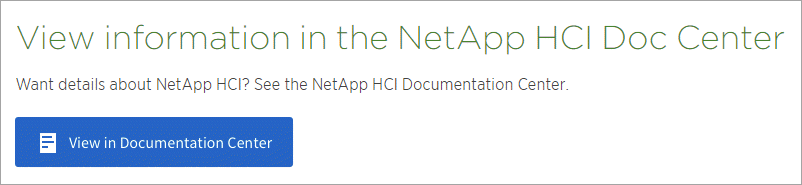

请求文档变更
请求文档变更 在 GitHub 上编辑
在 GitHub 上编辑 提供者指南
提供者指南AsciiDoc 参考
提供者
AsciDoc 是一种轻型标记语言，类似于 Markdown 。我们选择了 AsciDoc 而不是标准的 Markdown ，因为它提供了更多的即装即用功能。虽然功能更强大，但使用起来仍然很简单。请参见以下章节，开始在 AsciDoc 中写入。
请参见 "《 AssiDoctor 用户手册》" 以获得更多帮助。
基础知识
要进行简单的文档更新，您需要了解一些事项。
标题
= Page title == Level 1 section === Level 2 section ==== Level 3 section ===== Level 4 section
您只能有一个页面标题，但可以有多个分区标题。例如，您可能有三个 1 级部分，其中包括 2 级和 3 级部分：
= Page title == Level 1 section === Level 2 section == Level 1 section == Level 1 section === Level 2 section ==== Level 3 section
粗体文本
*Text*
斜体文本
_Text_
项目符号列表
* Item 1 + Continuation text for the previous list item. * Item 2 ** Item 2a * Item 3

|
+ 是一个列表继续。它会使文本与列表项保持一致。省略 + 将影响该行的格式设置。 |
已标记列表
Item 1:: Description 1 Item 2:: Description 2
或
[horizontal] Item 1:: Description 1 Item 2:: Description 2
在项目 1 上方添加 "Horizontal" 时，标签和问题描述将显示在同一行上。如果您的说明非常简短，则效果会很好。
-
不带 [ 水平 ]* 的示例
- 项目 1.
-
问题描述 1.
- 项目 2.
-
问题描述 2.
-
使用 [ 水平 ]* 的示例
- 项目 1.
-
问题描述 1.
- 项目 2.
-
问题描述 2.
步骤
.Steps . Step 1 . Step 2 + Info for step 2 . Step 3 .. Step 3a .. Step 3b . Step 4
|
|
+ 是一个列表继续。它会使文本与列表项保持一致。省略 + 将影响该行的格式设置。 |
映像
image:file.png["alt text"]
alt text 表示备用文本。它介绍了页面上显示的映像。主要用于使用屏幕读取器的视觉受损用户。
两个注释：
-
最好用引号将可选文字括起来，因为像逗号这样的标点符号可能会影响将内容从 AsciDoc 转换为 HTML 的功能。
-
。 "AsciiDoctor 文档" 说明 block images should be on their own line with twent colons ：
image ：：： file.png但是，我们更喜欢使用一个冒号，如上所示。使用一个冒号的效果相同，它在使用内部工具时效果更好。
视频
在 YouTube 上托管：
video::id[youtube]
在 GitHub 本地托管：
video::file.mp4
链接
应使用的语法取决于要链接到的内容：
链接到外部站点
url[link text^]
此时， ^ 将在新的浏览器选项卡中打开此链接。
链接到同一页面上的某个部分
<<section_title>>
例如：
For more details, see <<Headings>>.
链接文本可以不是章节标题：
<<section_title,Different link text>>
例如：
<<Headings,Learn the syntax for headings>>.
链接到文档中的其他页面
此文件需要位于同一 GitHub 存储库中：
link:<file_name>.html[Link text]
要直接链接到文件中的某个部分，请添加哈希（ # ）和该部分的标题：
link:<file_name>.html#<section-name-using-dashes-and-all-lower-case>[Link text]
例如：
link:style.html#use-simple-words[Use simple words]
注释，提示和注意事项
您可能希望通过使用注释，提示或注意事项陈述来吸引对某些陈述的注意。格式如下：
NOTE: text TIP: text CAUTION: text
请谨慎使用其中每一项。您不希望创建充满注释和提示的页面。如果您这样做，它们的意义就会降低。
以下是将 AsciDoc 内容转换为 HTML 时的每种情况：

|
这是一个注释。其中包括读者可能需要了解的额外信息。 |
|
|
提示可提供有用的信息，帮助用户执行某项操作或了解某项操作。 |

|
警告会建议读者小心操作。在极少数情况下使用此功能。 |
高级内容
如果您正在创作新内容，则需要查看此部分以了解一些 nitty-gritty 详细信息。
文档标题
每个 AsciDoc 文件都包含两种类型的标题。第一种是 GitHub ，第二种是 AsciDoctor ，它是一种将 AsciDoc 内容转换为 HTML 的发布工具。
GitHub 标题是 .adoc 文件中的第一组内容。它需要包括以下内容：
--- sidebar: sidebar permalink: <file_name>.html keywords: keyword1, keyword2, keyword3, keyword4, keyword5 summary: "A summary." ---
关键字和摘要直接影响搜索结果。事实上，摘要本身会显示在搜索结果中。您应确保它便于用户使用。最佳做法是，让摘要镜像您的主段落。
|
|
最好将摘要用引号括起来，因为像冒号这样的标点符号可能会影响将内容从 AsciDoc 转换为 HTML 的功能。 |
下一个标题直接位于文档标题下（请参见 [Headings]）。此标题应包括以下内容：
:hardbreaks: :nofooter: :icons: font :linkattrs: :imagesdir: ./media/
您无需在此标题中触摸任何参数。只需将其粘贴，即可忘记。
导联段落
文档标题下的第一段应在其正上方包含以下语法：
[.lead] This is my lead paragraph for this content.
【 .Lead 】将 CSS 格式应用于前导段落，该段落的格式与后续文本不同。
表
下面是基本表的语法：
[cols=2*,options="header",cols="25,75"] |=== | heading column 1 | heading column 2 | row 1 column 1 | row 1 column 2 | row 2 column 1 | row 2 column 2 |===
可以通过 _many _ 方法设置表的格式。请参见 "《 AssiDoctor 用户手册》" 以获得更多帮助。
|
|
如果单元格包含带格式的内容，例如项目符号列表，最好在列标题中添加 "A" 以启用格式化。例如： [cols="2 ， 2 ， 4a" options="header ]] |
任务标题
如果您要说明如何执行任务，则可以在执行步骤之前提供简介信息。完成这些步骤后，您可能需要说明要执行的操作。否则，最好使用标题来组织这些信息，这样可以进行扫描。
根据需要使用以下标题：
用户完成任务所需的信息。 _
_ 用户可能需要了解的有关此任务的一些额外上下文信息。 _
_ 完成任务的各个步骤。 _
_ 用户接下来应执行的操作。 _
其中每个都应包括。就在文本前面，如下所示：
.What you'll need .About this task .Steps .What's next?
此语法将以较大的字体应用粗体文本。
命令语法
提供命令输入时，将命令括在 ` 内以应用 monospace 字体：
`volume show -is-encrypted true`
具体如下所示：
volume show -is-encrypted true
有关命令输出或命令示例，请使用以下语法：
---- cluster2::> volume show -is-encrypted true Vserver Volume Aggregate State Type Size Available Used ------- ------ --------- ----- ---- ----- --------- ---- vs1 vol1 aggr2 online RW 200GB 160.0GB 20% ----
使用四个短划线，您可以输入同时显示的单独文本行。结果如下：
cluster2::> volume show -is-encrypted true Vserver Volume Aggregate State Type Size Available Used ------- ------ --------- ----- ---- ----- --------- ---- vs1 vol1 aggr2 online RW 200GB 160.0GB 20%
可变文本
在命令和命令输出中，将变量文本括在下划线中以斜体表示。
`vserver nfs modify -vserver _name_ -showmount enabled`
以下是该命令和变量文本的外观：
vserver nfs modify -vserver name -showmount enabled
|
|
目前，代码语法突出显示不支持下划线。 |
代码语法突出显示
代码语法突出显示提供了一个以开发人员为中心的解决方案，用于记录最受欢迎的语言。
-
输出示例 1*
POST https://netapp-cloud-account.auth0.com/oauth/token
Header: Content-Type: application/json
Body:
{
"username": "<user_email>",
"scope": "profile",
"audience": "https://api.cloud.netapp.com",
"client_id": "UaVhOIXMWQs5i1WdDxauXe5Mqkb34NJQ",
"grant_type": "password",
"password": "<user_password>"
}-
输出示例 2*
[
{
"header": {
"requestId": "init",
"clientId": "init",
"agentId": "init"
},
"payload": {
"init": {}
},
"id": "5801"
}
]-
支持的语言 *
-
Bash
-
卷曲
-
HTTPS
-
JSON
-
PowerShell
-
Puppet
-
Python
-
YAML
-
实施 *
复制并粘贴以下语法，然后添加受支持的语言和代码：
[source,<language>] <code>
例如：
[source,curl] curl -s https:///v1/ \ -H accept:application/json \ -H "Content-type: application/json" \ -H api-key: \ -H secret-key: \ -X [GET,POST,PUT,DELETE]
内容重复使用
如果您有一个内容块在不同页面上重复出现，则可以轻松写入一次，并在这些页面上重复使用。可以从同一个存储库中以及在各个存储库之间重复使用。工作原理如下。
-
在存储库中创建一个名为 _include 的文件夹
-
在该文件夹中添加一个 .adoc 文件，其中包含要重复使用的内容。
它可以是一个句子，一个列表，一个表，一个或多个部分，依此类推。不要在文件中包含任何其他内容—没有标题或任何内容。
-
现在，转到要重复使用该内容的文件。
-
如果要重复使用 _same _ GitHub 存储库中的内容，请在一行中单独使用以下语法：
include::_include/<filename>.adoc[]
例如：
include::_include/s3regions.adoc[] . 如果要重复使用 _Different_ 存储库中的内容，请单独在一行上使用以下语法：
include::https://raw.githubusercontent.com/NetAppDocs/<reponame>/main/_include/<filename>.adoc[]
例如：
include::https://raw.githubusercontent.com/NetAppDocs/cloud-tiering/main/_include/s3regions.adoc[]
就是这样！
如果您希望了解有关 include 指令的更多信息， "查看《 AssiDoctor 用户手册》"。
带有链接的映像
您可以向映像添加链接，使其像 " 按钮 " 。
-
输出示例 *
在以下屏幕截图中， "View in Documentation Center" 是一个包含链接的映像。

-
语法 *
添加映像时，请使用以下语法：
image:<file_name>.<ext>[alt=<text>,link=<url>,window=_blank]
"window=_blank" 将在新的浏览器选项卡（或窗口）中打开此链接。
例如：
image:btn-view-in-doc-center.png[alt=A button titled View in Documentation Center that links to the NetApp HCI Doc Center,link=http://docs.netapp.com/hci/index.jsp,window=_blank]